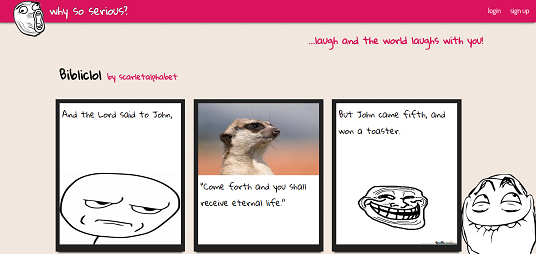
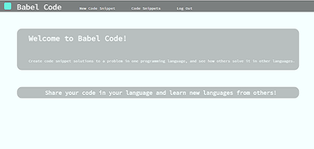
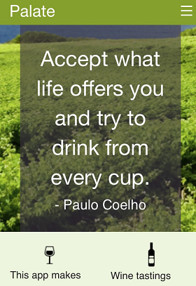

Why So Serious?
Why So Serious? is a joke app that combines user generated jokes with stock images to create a hilarious combination of text and graphics. Built with: Ruby, Sinatra, ActiveRecord, and PostgreSQL.
Babel Code
Babel Code is a web application that allows users to post snippets of code to receive open sourced code translations. Built with: Ruby on Rails, ActiveRecord, and PostgreSQL.
Palate
Palate is a mobile-first web app that provides a seamless platform for users to create wine tasting events and receive feedback about their tasting ability. Built with: Ruby on Rails, jQuery, ActiveRecord, and PostgreSQL.